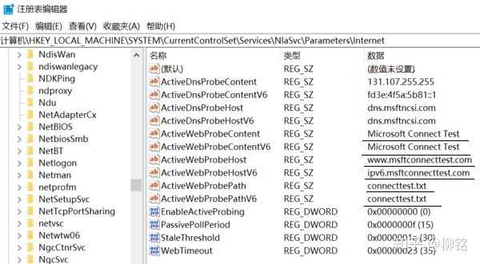
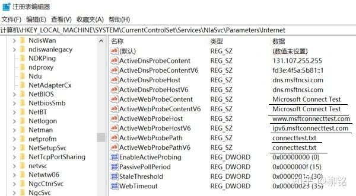
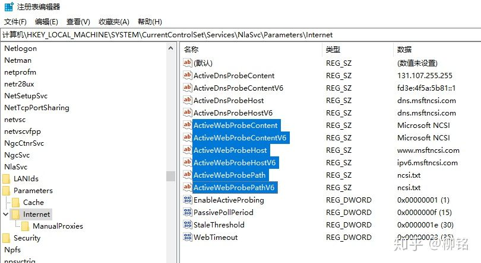
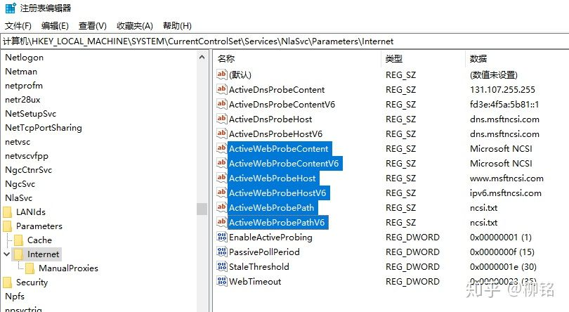

win10 无Internet
参考:
more
方法一
(自己摸索的, 但是没几天就又这样了)
在设备管理器中, 删除网卡驱动, 重启电脑
方法二
管理员权限 cmd
1 | netsh winsock reset |
方法三
作者：柳铭
链接：https://www.zhihu.com/question/48856675/answer/814251635
来源：知乎
著作权归作者所有。商业转载请联系作者获得授权，非商业转载请注明出处。
最近也遇到同样的问题，试过网上的几乎所有方法，例如禁用复用网卡、网络重置、禁用复用服务，也用了用修改注册表下\HKEY_LOCAL_MACHINE\SYSTEM\CurrentControlSet\Services\NlaSvc\Parameters\Internet下的EnableActiveProbing项的办法，均不见效。如果大家也出现以上状况，尤其是win10 18362版以后的新版本，则取消上网验证通常不能解决问题。
原因分析：经注册表选项比对，发现问题出在连网返回值功能有了变化。原理是每当连网后，系统会自动向微软的http://dns.msftncsi.com发出请求，然后返回一个NCSI.txt的值，这一值如果正确时，则确认为已连网。而Win10最近的版本中，这个返回服务器和值有了新变化并反映为6个注册表项中。这些变化因国内部分运行商的网络重定向，不能得到正确的反馈，因此出现实际能上网确显示为无internet的问题。下图中第一张图是出错的注册表项：
更新Win10后被系统改错的注册项
下图中第二张是18362版之前正确的注册表项：
 修改成正确值的注册项
修改成正确值的注册项
其中被选中标成蓝色的项，改回为图中所显示的值，EnableActiveProbing仍恢复为1，重启系统后，网络即能恢复正常，此方法已在多台电脑上测试有效，希望能顺利解决大家的问题！
注册表项具体在：\HKEY_LOCAL_MACHINE\SYSTEM\CurrentControlSet\Services\NlaSvc\Parameters\Internet 之下，请对照图中成值修改！！！